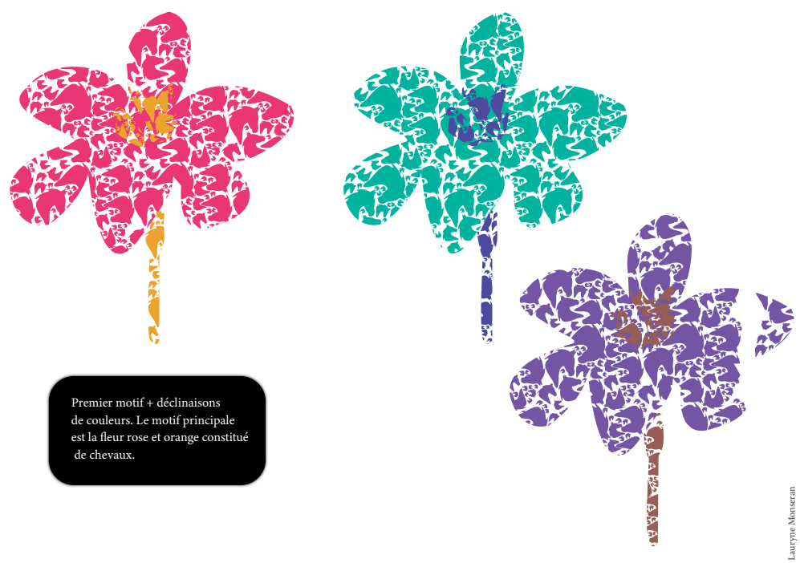
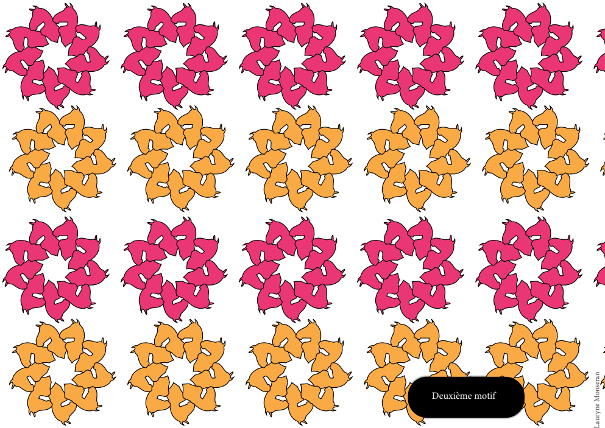
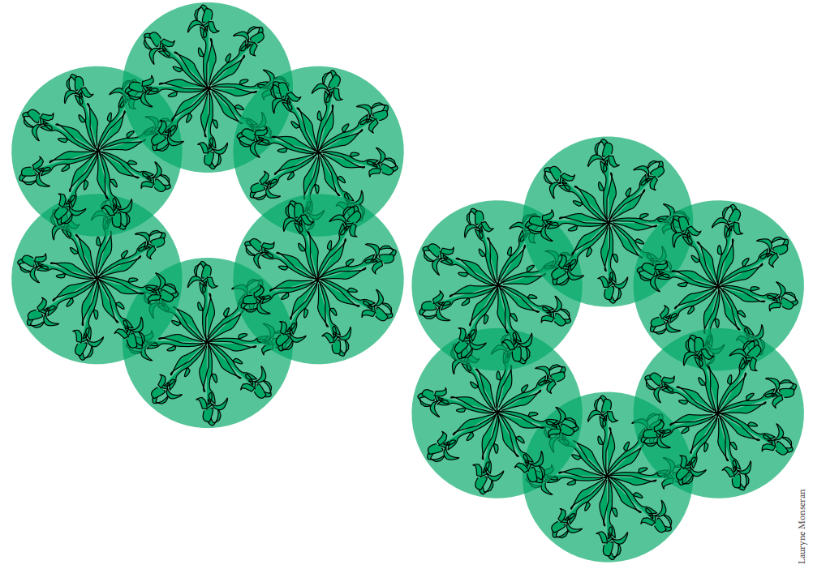
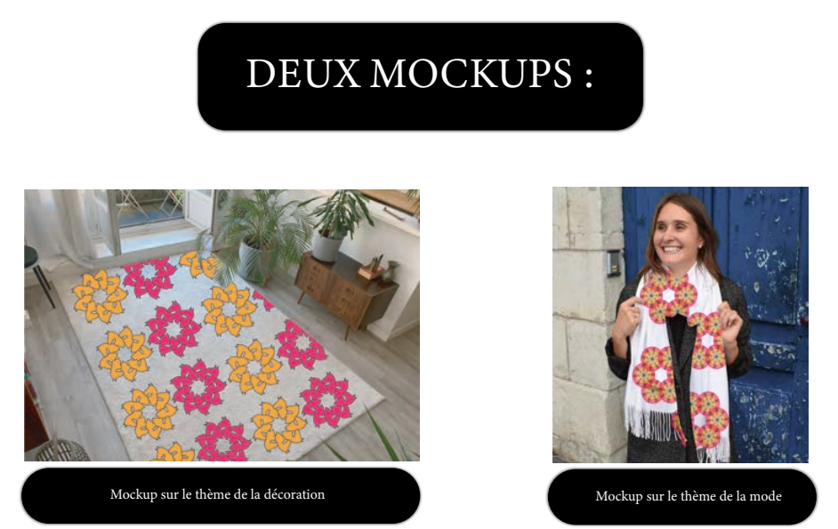

Explication du Projet :
Ce projet consistait à créer des motifs inspirés d'un tableau de musée, en s'appuyant sur un
moodboard personnel pour en capter l'univers. Après avoir conçu ces motifs de manière
vectorielle, je les ai déclinés en plusieurs palettes de couleurs pour explorer différentes
ambiances. L'étape finale était de réaliser un mockup - une mise en situation réaliste du design
sur des supports variés (comme du textile ou des accessoires) - afin de visualiser l'application
concrète de ces motifs. Ce travail m'a permis de développer à la fois ma créativité (en
réinterprétant une œuvre existante), ma technique (maîtrise des logiciels de design) et mon sens
de l'adaptation visuelle (à travers les variations colorées et les mises en contexte
professionnelles).

Motif de fleur consistuait par des chevaux

Motif cercle de chevaux

Motif constituait de cercle, fleurs

Mockup - importation du motif en réel